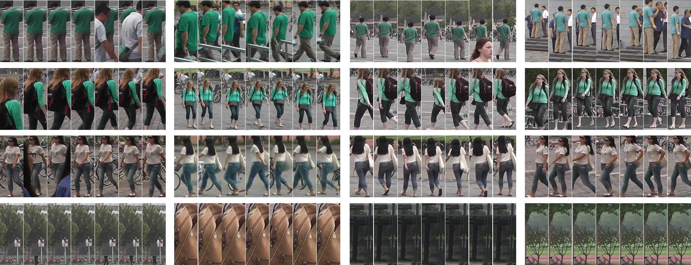

In this page, we introduce the Motion Analysis and Re-identification Set (MARS) dataset as well as the baseline evaluation codes. The ECCV paper can be downloaded here [PDF].
If you use this dataset in your research, please kindly cite our work as,
MARS (Motion Analysis and Re-identification Set) Dataset

MARS is an extension of the Market-1501 dataset [43]. During collection, we placed six near-synchronized cameras in the campus of Tsinghua university. There were Five 1,080*1920 HD cameras and one 640*480 SD camera. MARS consists of 1,261 different pedestrians whom are captured by at least 2 cameras.
Given a query tracklet, MARS aims to retrieve tracklets that contain the same ID.
| Dataset | MARS | iLIDS | PRID | 3DPES | ETH | CUHK03 | VIPeR | Market-1501 |
| #ID | 1,261 | 300 | 200 | 200 | 146 | 1,360 | 632 | 1,501 |
| #tracklets | 20,478 | 600 | 400 | 1,000 | 146 | - | - | - |
| #bboxes | 1,191,003 | 43,800 | 40k | 200k | 8,580 | 13,164 | 1,264 | 32k |
| #distractors | 3,248 | 0 | 0 | 0 | 0 | 0 | 0 | 0 |
| #cam./ID | 6 | 2 | 2 | 8 | 1 | 2 | 2 | 6 |
| Produced by | DPM+GMMCP | hand | hand | hand | hand | hand | hand | DPM |
| Evaluation | mAP+CMC | CMC | CMC | CMC | CMC | CMC | CMC | mAP+R1 precision |
New!
We have summarized current state of the art methods on MARS.
Baseline Codes
The baseline evaluation code is provided on Github. Click here.
For each bounding box, we extract the IDE feature described in [1]. We provide the extracted feature below.
IDE Feature (1.92GB) on Baidu.
We provide the metric learning codes of XQDA [2] and KISSME [3] using the public codes.
Dataset Download
The dataset package is provided on below.
v2016.08.09 (6.26GB) on Baidu,
v2016.08.09 (6.26GB) on GoogleDrive.
The package contains 2 folders.
1) "bbox_train". There are 509,914 bboxes in this folder, belonging to 625 IDs and 8,298 tracklets.
2) "bbox_test". There are 681.089 bboxes in this folder (gallery+query), belonging to 636 IDs and 12,180 tracklets.
Naming Rule of the bboxes
In bbox "0065C1T0002F0016.jpg", "0065" is the ID of the pedestrian. "C1" denotes the first camera (there are totally 6 cameras). "T0002" means the 2th tracklet. "F016" is the 16th frame within this tracklet.
For the tracklets, their names are accumulated for each ID; but for frames, they start from "F001" in each tracklet.
Using the same convention as Market-1501, ID = "00-1" means junk images which do not affect retrieval accuracy; ID = "0000" means distractors, which negatively affect retrieval accuracy.
If you have any comments or questions, please let me know: liangzheng06@gmail.com
References
[1] L. Zheng et al. Person Re-identification in the Wild. Arxiv, 2016.
[2] S. Liao et al. Person re-identification by local maximal occurrence representation and metric learning. CVPR 2015.
[3] M. Kostinger et al. Large scale metric learning from equivalence constraints. CVPR 2012.